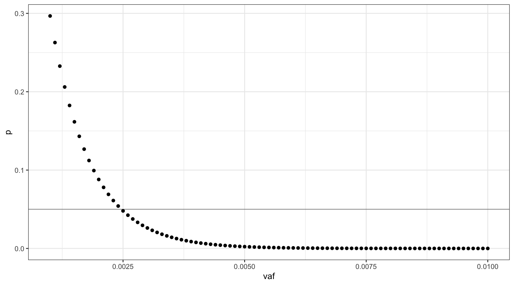
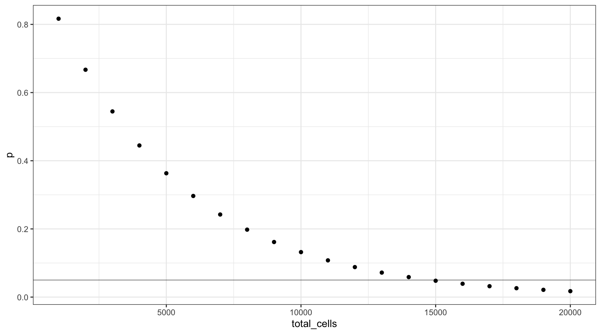

Rare mutation detection model
Last updated: 2021-09-22
Checks: 6 1
Knit directory: rare-mutation-detection-rmarkdown/
This reproducible R Markdown analysis was created with workflowr (version 1.6.2). The Checks tab describes the reproducibility checks that were applied when the results were created. The Past versions tab lists the development history.
The R Markdown file has unstaged changes. To know which version of the R Markdown file created these results, you’ll want to first commit it to the Git repo. If you’re still working on the analysis, you can ignore this warning. When you’re finished, you can run wflow_publish to commit the R Markdown file and build the HTML.
Great job! The global environment was empty. Objects defined in the global environment can affect the analysis in your R Markdown file in unknown ways. For reproduciblity it’s best to always run the code in an empty environment.
The command set.seed(20210916) was run prior to running the code in the R Markdown file. Setting a seed ensures that any results that rely on randomness, e.g. subsampling or permutations, are reproducible.
Great job! Recording the operating system, R version, and package versions is critical for reproducibility.
Nice! There were no cached chunks for this analysis, so you can be confident that you successfully produced the results during this run.
Great job! Using relative paths to the files within your workflowr project makes it easier to run your code on other machines.
Great! You are using Git for version control. Tracking code development and connecting the code version to the results is critical for reproducibility.
The results in this page were generated with repository version 2f677c2. See the Past versions tab to see a history of the changes made to the R Markdown and HTML files.
Note that you need to be careful to ensure that all relevant files for the analysis have been committed to Git prior to generating the results (you can use wflow_publish or wflow_git_commit). workflowr only checks the R Markdown file, but you know if there are other scripts or data files that it depends on. Below is the status of the Git repository when the results were generated:
Ignored files:
Ignored: .DS_Store
Ignored: .Rhistory
Ignored: .Rproj.user/
Unstaged changes:
Modified: analysis/model.Rmd
Note that any generated files, e.g. HTML, png, CSS, etc., are not included in this status report because it is ok for generated content to have uncommitted changes.
These are the previous versions of the repository in which changes were made to the R Markdown (analysis/model.Rmd) and HTML (docs/model.html) files. If you’ve configured a remote Git repository (see ?wflow_git_remote), click on the hyperlinks in the table below to view the files as they were in that past version.
| File | Version | Author | Date | Message |
|---|---|---|---|---|
| html | 2f677c2 | mcmero | 2021-09-22 | Build site. |
| Rmd | de62c5c | mcmero | 2021-09-22 |
|
| html | de62c5c | mcmero | 2021-09-22 |
|
| html | b680ba0 | mcmero | 2021-09-17 | Build site. |
| Rmd | ebb9d74 | mcmero | 2021-09-17 | initial commit |
| html | ebb9d74 | mcmero | 2021-09-17 | initial commit |
library(ggplot2)Model
Q: what is the lowest % VAF of mutation we can reliably detect (at >95% confidence) using Nanoseq on bulk WES?
Assumptions
- We consider a human diploid genome without SCNAs
- The mutation is heterozygous
- We sequence 15,000 cells
- Our duplex rate is optimal ~81%
- Our ligation efficiency is 20%
- We assume a duplex mutation call equals a real mutation (theoretical error rate of duplex sequencing is <10^-9)
Probability of sequencing a mutant cell
Let \(f\) be the probability of sequencing a mutation from a single fragment, on both strands.
\(f = (v / p) \times d \times l\)
Where:
- \(v\) = target VAF
- \(p\) = ploidy (2)
- \(d\) = duplex efficiency (0.81)
- \(l\) = ligation efficiency (0.2)
We assume the probability of sequencing a mutant fragment is binomially distributed. We want to know the probability of selecting at least one mutant fragment:
\(P(Bin(f, n)) > 0)\) = 0.95
This is equivalent to:
\(P(Bin(f, n)) = 0)\) = 0.05
Where \(n\) is the number of sequenced cells (15,000). We note that the number of mutant cells will, on average, will be \(2nv\).
Since we don’t know \(v\), we’ll define a vector of possible VAFs incremented by \(0.001\), \(V = \{0.001, 0.002..0.01\}\). Using these values, we can plot the probability of not sequencing the mutant fragment, at each VAF (line is at 0.05).
d = 0.81
l = 0.2
v = seq(0.001, 0.01, 0.0001)
f = (v / 2) * d * l
n = 15000
vafs <- data.frame(vaf=v,
p=dbinom(0, n, f),
mutant_cells=(n * v * 2))
ggplot(vafs, aes(vaf, p)) +
geom_point() +
theme_bw() +
geom_hline(yintercept=0.05, alpha=0.4)
We can also plot this as mutant cells instead of VAF:
ggplot(vafs, aes(mutant_cells, p)) +
geom_point() +
theme_bw() +
geom_hline(yintercept=0.05, alpha=0.4)
| Version | Author | Date |
|---|---|---|
| de62c5c | mcmero | 2021-09-22 |
For this range of VAFs, 0.0025 (0.25%) is the smallest VAF for which the probability of missing the mutant is approximately 0.05. A VAF of 0.0025 translates to 75 mutant cells on average in our input of 15,000.
deviation <- abs(0.05 - vafs$p)
print(vafs[which(deviation == min(deviation)),]) vaf p mutant_cells
16 0.0025 0.04793988 75Varying the number of input cells
If we change the number of input cells, how does this change the probability calculation? Let’s assume the target VAF is 0.0025 from our previous calculation (line is at 0.05).
v = 0.0025
n = seq(1000, 20000, 1000)
f = (v / 2) * d * l
cells <- data.frame(vaf=v,
p=dbinom(0, n, f),
total_cells=n,
mutant_cells=(n * v * 2))
ggplot(cells, aes(total_cells, p)) +
geom_point() +
theme_bw() +
geom_hline(yintercept=0.05, alpha=0.4)
| Version | Author | Date |
|---|---|---|
| de62c5c | mcmero | 2021-09-22 |
We can then expand this to different target VAFs.
Let’s define our VAFs as \(V = \{0.01, 0.02..0.2\}\) and put these on a single plot (line at p = 0.05).
cells_vs_vaf = NULL
n = seq(100, 5000, 100)
V = seq(0.01, 0.20, 0.01)
for (v in V) {
f = (v / 2) * d * l
toadd <- data.frame(
vaf=as.factor(v),
p=dbinom(0, n, f),
total_cells=n
)
cells_vs_vaf <- rbind(cells_vs_vaf, toadd)
}
ggplot(cells_vs_vaf, aes(total_cells, p, colour=vaf)) +
geom_line() +
theme_bw() +
theme(legend.position = 'bottom') +
geom_hline(yintercept=0.05, alpha=0.4)
| Version | Author | Date |
|---|---|---|
| de62c5c | mcmero | 2021-09-22 |
sessionInfo()R version 4.1.1 (2021-08-10)
Platform: x86_64-apple-darwin17.0 (64-bit)
Running under: macOS Big Sur 10.16
Matrix products: default
LAPACK: /Library/Frameworks/R.framework/Versions/4.1/Resources/lib/libRlapack.dylib
locale:
[1] en_AU.UTF-8/en_AU.UTF-8/en_AU.UTF-8/C/en_AU.UTF-8/en_AU.UTF-8
attached base packages:
[1] stats graphics grDevices utils datasets methods base
other attached packages:
[1] ggplot2_3.3.5 workflowr_1.6.2
loaded via a namespace (and not attached):
[1] Rcpp_1.0.7 highr_0.9 pillar_1.6.2 compiler_4.1.1
[5] later_1.3.0 jquerylib_0.1.4 git2r_0.28.0 tools_4.1.1
[9] digest_0.6.27 evaluate_0.14 lifecycle_1.0.0 tibble_3.1.4
[13] gtable_0.3.0 pkgconfig_2.0.3 rlang_0.4.11 yaml_2.2.1
[17] xfun_0.25 fastmap_1.1.0 withr_2.4.2 dplyr_1.0.7
[21] stringr_1.4.0 knitr_1.33 generics_0.1.0 fs_1.5.0
[25] vctrs_0.3.8 tidyselect_1.1.1 rprojroot_2.0.2 grid_4.1.1
[29] glue_1.4.2 R6_2.5.1 fansi_0.5.0 rmarkdown_2.11
[33] farver_2.1.0 purrr_0.3.4 magrittr_2.0.1 whisker_0.4
[37] scales_1.1.1 promises_1.2.0.1 ellipsis_0.3.2 htmltools_0.5.2
[41] colorspace_2.0-2 httpuv_1.6.3 labeling_0.4.2 utf8_1.2.2
[45] stringi_1.7.4 munsell_0.5.0 crayon_1.4.1